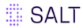

Segurança integrada para ambientes cloud-native e APIs em todas as camadas da operação. Nossas soluções protegem workloads, containers, Kubernetes, pipelines de desenvolvimento e interfaces de APIs com uma abordagem contínua, oferecendo visibilidade, identificação de vulnerabilidades e detecção proativa de ameaças.
Assim, sua empresa fortalece a segurança de aplicações e serviços digitais, reduz a superfície de ataque e mantém a agilidade, a escalabilidade e a conformidade dos ambientes em nuvem.
Plataforma completa de segurança para aplicações cloud-native, atuando desde o código até o ambiente de runtime, com escaneamento de código, imagens e infraestrutura para detecção de vulnerabilidades e proteção da cadeia de suprimentos (supply chain) antes da produção, proteção em runtime para workloads em contêineres, funções serverless e ambientes híbridos ou multi-cloud, além de gerenciamento de postura de segurança (posture management) e conformidade contínua, integrando segurança aos pipelines DevSecOps.

Plataforma especializada em segurança de APIs, desenvolvida para
proteger aplicações contra ataques, vazamento de dados e acessos
indevidos.
A ferramenta monitora o tráfego de APIs em tempo real,
identifica vulnerabilidades e detecta comportamentos suspeitos
utilizando inteligência artificial, ajudando empresas a
fortalecerem a segurança de seus sistemas e integrações
digitais.